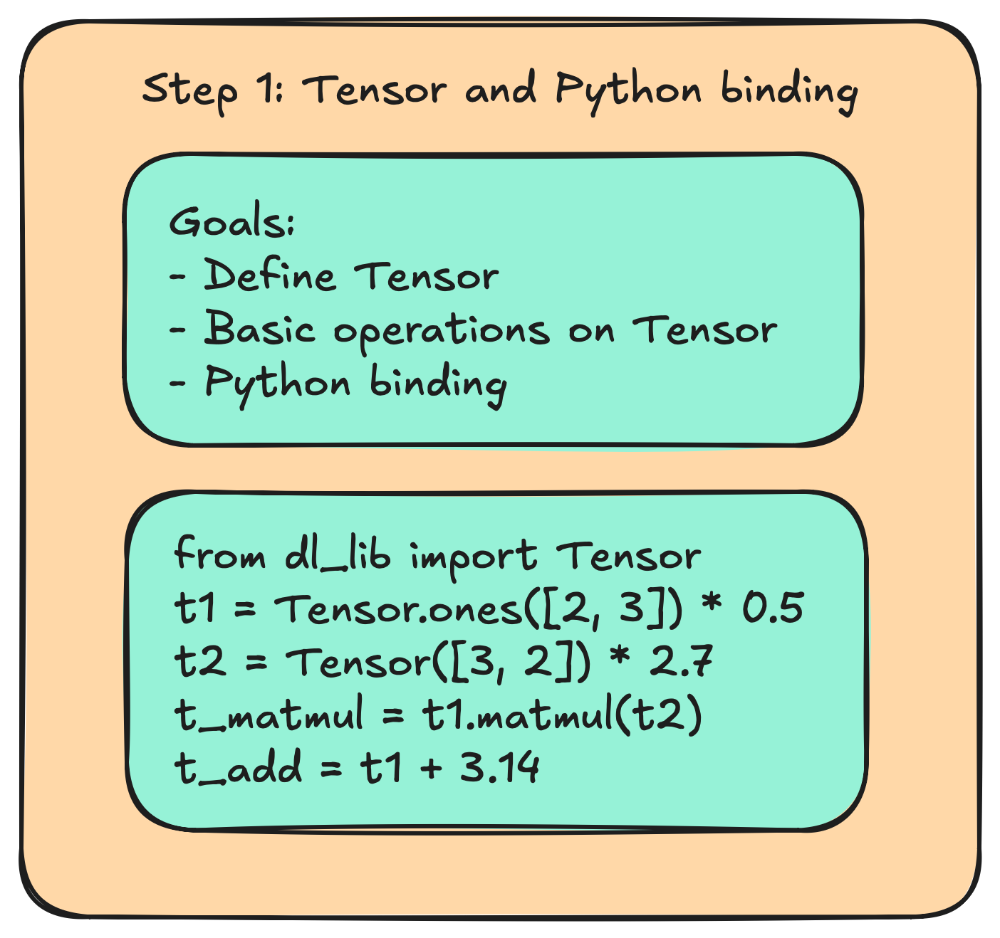
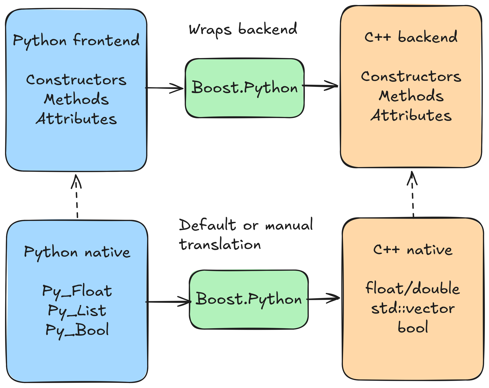
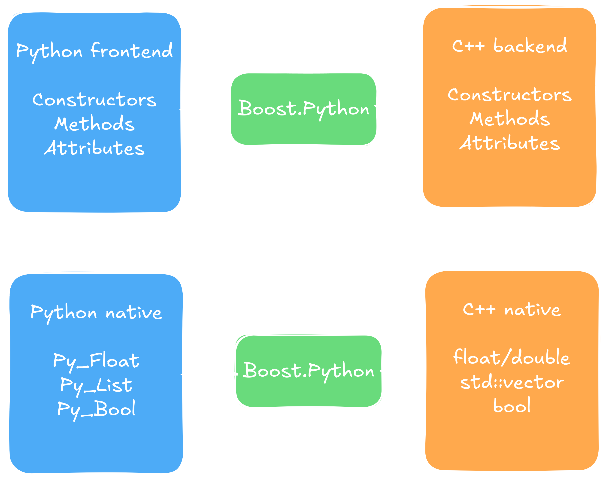

If you are like me then chances are things are a whole lot more fun when you
understand how they work from the ground up. Having used PyTorch and Tensorflow/Keras for
a while I never really understood why things are the way they are in those. So I decided
to implement my own small library to train neural networks. It turned out to be quite
similar to PyTorch in its frontend, making me like PyTorch a whole lot better in the end. This
multi-part series will walk you step-by-step through the components that are necessary
to build your own library. The posts planned so far are:
Part 1 - Tensor & Python frontend
Part 1 - Tensor & Python frontend:
First we introduce the basic structure of the Tensor. By the end of this one
we will have basic Python interface to instantiate Tensors and do basic operations
on them such as MatMul, addition, and elementwise multiplication. This will be the easiest
to grasp blogpost, as we lay the foundation for the more specialized ones that follow, and will
be mainly about software design.

Part 1: Tensor interface and Python bindings.Part 1: Tensor interface and Python bindings.
Part 2 - Autograd and training pipeline
Part 2 - Autograd and training pipeline:
Part 2 will be all about training. We will introduce the
computational graph, show how we can build it dynamically during run-time, how to use it to enable autograd,
and everything that we need for a basic network implementation. It will conclude in a running MNIST end-to-end
training pipeline built from scratch.
Part 2: Autograd and training pipeline.Part 2: Autograd and training pipeline.
Part 3 - CUDA backend implementation and optimization
Part 3 - CUDA backend implementation and optimization:
Having built a minimal MNIST example,
we take a break from ML itself and will start to
make it actually practical to use. The main challenge for anything ML from the users
perspective are performance and energy/hardware efficiency. To do so we will enable the
GPU by implementing our backend in CUDA. We will then optimize the CUDA backend step-by-step
using profilers (NSYS and NCU).
Part 3: CUDA backend implementation and optimization.Part 3: CUDA backend implementation and optimization.
Part 4 - CPU backend optimization
Part 4 - CPU backend optimization:
For everyone who does not have an NVIDIA GPU at hand,
but also for the fun of it, we will
optimize our C++ backend for the CPU version as well. We will use techniques such as cache
optimization, thread pools, and hardware accelerators such as AVX to achieve better runtime.
Part 4: CPU backend optimization.Part 4: CPU backend optimization.
If we still have time we can then continue implementing advanced models such as transformers (the basis for LLMs)
and modern computer vision modules, and provide further optimization techniques guided by larger models.
The blogposts themselves explain the main points, programming techniques, and design choices,
while everything is backed up by a real
GitHub repository that has been
built in real time and can be used for a full executable example. Git commits and release notes index
the correct versions.
Preliminary thoughts
Before we start we want to think about the overall structure that we want to have. We want our
design to be flexible for maintenance, modular, and easy to change. In short, we want to obey
the SOLID principles.
Because neither of us can anticipate what is going to happen in the future we can make decisions
now that minimize the risk of major overhauls with a little bit of foreshadowing. While thinking
about everything is probably beyond the scope of this project, we can consider the following trends
to hedge ourselves a little against gruesome refactoring sessions.
Current trends shaping machine learning system design.Current trends shaping machine learning system design.
Securing our camp, we want the following:
Do not settle for a datatype yet, but use a generic one we can quickly find and exchange.
Same goes for tensor representations for edge devices.
Keep the data management device agnostic to support GPUs and other types of special hardware.
Make things as modular as possible to incorporate new research as quickly as possible.
We will go further into those below, but two things to start with: Because we can see that the dimensions and
the fundamental data types of representation are changing we can make our future lives easier by using aliases.
While two of them might look confusing we can easily make them signed or unsigned, whatever suits our purpose
better, and as for ftype, we can either change the data type completely throughout the whole project,
or we can adjust punctually very easily. After all, a global search for "ftype" will give us better results than a
global search for "float" or "double", helping us refactoring later if we wanted to.
// src/utility/global_parameters.h -> will be renamed util.h later
using ftype = float;
using tensorDim_t = std::uint16_t; // represent one dimension of a tensor
using tensorSize_t = std::uint32_t; // represent the total size of a tensor
static_assert(sizeof(tensorSize_t) >= sizeof(tensorDim_t));
Designing the tensor backend
Designing the data layout
The heart of deep learning is always the tensor data structure. What sounds fancy at first actually
becomes pretty quickly just plain and simple linear algebra in spirit. Basically, a tensor is a
generalized matrix with an arbitrary large number of dimension. So, basically a tensor is a data
structure of the form $\mathbb{R}^n$, $n \in \mathbb{N}^+$. In code, this will be a multidimensional
array of a floating point type, for which we have to figure out the best shape. The beginning of the
tensor then looks like this:
// src/data_modeling/tensor.h
class Tensor final { // final to promote flat hierarchies
private:
Dimension dims;
std::unique_ptr<tensorValues_t> values = nullptr; // contained values of tensor
public:
// stuff goes here
}
Here, we implicitly use two new datatypes we have yet to define: tensorValues_t and
Dimension. We start with the latter, since it is easier to explain. Basically, what it
does is represent the dimensions of our tensor. Because we want a Python binding later, there's no
implicit conversion method from any Python datatype to our Dimension data type, thus we use a
std::vector<tensorDim_t> as an argument. The data type looks like this for now:
// src/data_modeling/dimension.h
class Dimension final {
private:
std::vector<tensorDim_t> dims;
tensorSize_t size = 0;
public:
Dimension(const std::vector<tensorDim_t>& dims);
Dimension(const Dimension& other);
Dimension& operator=(const Dimension& other);
Dimension(Dimension&& other) noexcept;
Dimension& operator=(Dimension&& other) noexcept;
~Dimension() noexcept = default;
void resize(const std::vector<tensorDim_t>& dims);
tensorSize_t getSize() const noexcept {
return size;
}
tensorDim_t get(int idx) const {
return (*this)[idx];
}
tensorDim_t operator[](int idx) const {
if(idx < 0){
idx = dims.size() + idx; // -1 is last idx, -2 second last and so forth
}
return dims[idx];
}
// also add some operators for convenience: !=, ==, << for printing
}
There are no real surprises here. Worth noting is probably only that we gave
the data type implicitly a second function apart from representing the dimensions,
namely through the attribute tensorSize_t size. Whether the total size,
which is the product of the input to the constructor
Dimension(const std::vector<tensorDim_t>& dims), should be part of the dimension
or the tensor itself is more a matter of taste. We leave it here for now, and shifting it over
will be an easy task. The Dimension data type will become more interesting later, when
we use strided access patterns to represent transposed or permuted tensors. For now we keep it
simple.
The second data structure tensorValues_t is the more interesting one for now. Its main
purpose is to manage the underlying data. Whether the tensor's data sits on a GPU, the computer's memory,
or any other device such as a TPU should not matter to the tensor. And managing that is the job of this one.
Because we already plan concretely to use CUDA later on we encode the device in an enum value via
// src/data_modeling/device.h
enum class Device {
CPU,
CUDA
};
With this in mind, we define the tensorValues_t as a private nested class inside the tensor class,
as only the tensor should have access to the values. Anybody else who wants to see the data has to knock
first and ask friendly. The implementation of this one goes as follows:
// src/data_modeling/tensor.h
class Tensor final { // final to promote flat hierarchies
private:
// ...
class tensorValues_t final
{
private:
tensorSize_t size = 0;
ftype *values = nullptr;
Device device;
inline static Device defaultDevice = Device::CPU;
public:
explicit tensorValues_t();
explicit tensorValues_t(Device d);
~tensorValues_t() noexcept;
tensorValues_t(const tensorValues_t& other) = delete;
tensorValues_t& operator=(const tensorValues_t& other) = delete;
tensorValues_t(tensorValues_t&& other) noexcept;
tensorValues_t& operator=(tensorValues_t&& other) noexcept;
tensorSize_t getSize() const noexcept;
// this is still templated in the commit
void resize(const tensorSize_t size)
{
this->size = size;
switch (this->device)
{
case Device::CPU:
values = static_cast<ftype* >(std::malloc(this->size * sizeof(ftype)));
break;
case Device::CUDA:
std::__throw_invalid_argument("Not implemented yet.");
break;
}
}
void setDevice(const Device d) noexcept;
Device getDevice() const noexcept;
// also add access functions [] and/or get(tensorSize_t idx) and set(tensorSize_t idx)
};
// Tensor continues here...
}
The things worth noting are the resize() method, which could be better named
init() at this stage, since it does implicit allocation. The choice for resize will
make sense later. Also note that we enable moving, but disable copying. We do not accidentally want
to copy potentially huge arrays by accident, so this will help us make our code safer.
Interesting is also the static field defaultDevice. We enable a
default device via a global field. When I was a kid my grandma used to always tell me "A few lines
of code say more than a thousand words", so in this spirit here we go:
The probably most interesting thing about the tensor's values is that they are represented
by a single pointer/array, not a multidimensional one. This has mainly performance reasons.
Say we implemented it as a 2D array as in std::vector<std::vector<ftype>>:
In this case we would access a value via values[i][j], leading to two pointer chasings.
Same for the case ftype** values;. And with higher dimensional tensors this gets a mess really
quick. Thus, linear indexing provides a clean solution with only one pointer, that also happens to be
much more cache friendly. To index into the array we do the following:
If this didn't make it clear yet, we refer e.g. to the
following presentation.
It is important to grasp this concept now, since it will haunt us for the rest of this tutorial. We conclude this part with
a final overview via a class diagram, showing the relationships in between the three classes we just created, and
what each of them is responsible for.
(Non-UML) class diagram showing the three modules and what each is for.(Non-UML) class diagram showing the three modules and what each is for.
Adding operations to the tensor
Now that we have the initial data layout down we can embellish the class with more functions.
The tensor itself is nice, but if it doesn't do anything but represent data it'll be useless for
us. For a good start we can gobble up some math operations we expect to happen. To keep things simple
we start with basic operations, exemplified via the following:
The drill is pretty clear in between those, and no surprises. The only one we need
to look out for so far is the matrix multiplication. Given two matrices $A \in \mathbb{R}^N$
and $B \in \mathbb{R}^N$, we have space requirement $\mathcal{O}(N^2)$, but a whopping cubic computational
complexity of $\mathcal{O}(N^3)$ (taking
Strassen's algorithm aside,
which is more of a theoretically impressive result than something that gets used in practice).
Because in deep learning so many matrix multiplications are performed this is widely considered the
main slug of deep learning. In fact, most of the hardware accelerators focus exactly on making this
operation as fast as possible, such as Google's TPU or AMD's NPUs. For now we compute the matmul in
two steps: Step one is isolating the individual multiplications if the dimensions of the tensors are
larger than two, e.g. for batched tensors.
Next we multiply the individual matrices together. We will revisit this piece of code later,
as we will be able to harvest a lot of performance improvements from this piece of code.
The naive version we use for now is as follows:
We note that we already did a minor optimization here. Instead of traversing the rows of the
right tensor, we go column wise. This way we avoid strided access into the right column, which
makes this implementation more memory access friendly. We will go deeper into this part of the
code when we optimize, so for now we will leave it as is and move on to exposing our tensor and
its operations to Python next.
Adding the Python frontend
Most of today's ML runs in Python, not in C++. Reasons are vast, but Python's ability to change code and
therefore fast prototyping is probably the main reason. That and that support for scientific software was
large before modern ML came into play even, through libraries like Scikit-learn, NumPy, Matplotlib, and
SciPy. When writing ML applications
it is genuinely easy to mess up dimensions or wanting to experiment with different configurations
quickly. If all that was written in C++ we'd spend a lot of time on simple try-and-error loops, wasting lots
of time on unnecessary complicated prototyping and compilation. Python on the other hand circumvents all
these problems and is in general just a fast-prototyping powerhouse.
A challenge of building Python code on top of C++ code is managing two different memory management systems.
I already talked about this in my article
Calling Python From C++,
so lets not repeat that here. Instead let's focus on solutions. There are multiple good frameworks out there
that are up to the task. While the best choice would probably be
pybind11, I actually chose to use
Boost.Python.
The reason being that as a C++ dev I already was used to Boost, and there was a ready tutorial that made getting started
very easy. However, for better maintainability the Python frontend and the C++ backend are still separated in code, making it easy
for us to exchange either if we wanted to. With that we can start exposing the tensor object into Python.
Implementing the basic frontend
We start with
an easy one that we will refine in the autograd section of the next post. To expose the tensor we simply have to write
There obviously is a lot to unwrap here, so we go into it bit by bit.
Class definition and object management
The class_<>("ClassName", {ctor_signature}) is the
call that manages our class. The first argument is what class we manage. The second template argument, the
std::shared_ptr<Tensor>, tells Boost.Python how we want to manage our object in the background (the
choice for a shared pointer will become clearer in the next blogpost). We will scratch on how this works internally in
the optional segment below, but for the uninterested reader, this basically means that internally, when calling say
t = Tensor() in Python, then t is an object that holds a reference to a shared pointer holding
our tensor. The third argument boost::noncopyable now prevents Boost.Python from creating elaborate copies,
i.e. it does not call the copy-constructor for the Python frontend. Instead it hands over the reference only. Removing the
template argument will likely end up with a compiler error anyway, since we manually deleted the copy-operations for our Tensor
class. Lastly, the braces take in the Python internal class name "Tensor". In summary, we have this behavior:
# in Python
from dl_lib import Tensor # name Tensor defined by first argument in braces
t1 = Tensor() # holds the tensor as a shared_ptr
t2 = t1 # no copy-ctor invoked, t2 merely holds a reference to t1 via shared_ptr
Constructors
There was one thing I lied about here though. Looking at the next pieces of code, we realize we add the constructors.
The second argument in the braces enables us to define a constructor. I chose to give it a no_init,
because giving it one here would visually emphasize on that ctor. Giving the class more constructors however is
done via calling .def, as in .def(init<const std::vector<tensorDim_t>&, optional<bool> >())
and in .def(init<const std::vector<tensorDim_t>&, optional<Device, bool> >()). The leading
init tells Boost.Python that this is a constructor, and the optional is an easy way to
give it optional arguments. The lie in my earlier code therefore consisted in calling a non-existent default constructor
that has no arguments. More on that can be taken from
the official website.
Adding class properties
Going further then we can see that these next lines of code represent the properties and methods we give our tensor class.
We start with two properties via .add_property, namely the device and the dimensions. We take extra care of the
dimensions here, returning them via make_function(&Tensor::getDims, return_internal_reference<>()). We have to
do this since our original method has the following signature const Dimension& getDims() const noexcept;. The
interesting part here is the return value, being a constant reference. Python does not allow for constant values by design,
and by default the return value of Python is a copy of the object. Mirroring the C++ backend then we have to tell Boost.Python
what to do with this one. return_internal_reference does two things then: Firstly it tells Python to not return a
copy of the dimension object (necessary if we deleted the copy-operations for that one), and secondly, it tells Python to
keep the tensor alive so long the reference to the dimensions object exists. Otherwise there would be no guarantee that the
reference would stay valid for its lifetime, resulting in dangerous dangling pointers. Say we do the following:
# in Python
dims = t.dims # get reference to dim object
del t # destroy tensor
print(dims.get(0)) # safe only if dims keeps t alive
Holding a non-owning reference would mean that dims would be a dangling pointer, resulting in a crash. return_internal_reference
prevents this explicitly, making our code safer. For more on call-policies I refer to the Boost.Python
tutorial.
Adding class methods
Below the properties section we see all the method definitions we want to expose:
These are the methods we give our Tensor object. First we give it the names. All the names we give it here are reserved
Python keywords. For instance, defining __add__ for our class enables us to write simply t + 5
or t1 + t2. Similarly, __getitem__ gives us t[5] = 3.14. However, there is a mismatch
in the return values. These method do return a new tensor object as defined in the backend, but Python manages
shared_ptr<Tensor> objects. To bridge the gap we give it wrapper functions that convert the return value
explicitly into the desired type. This would look something like this:
In other words, we define lambdas. The first argument is always a reference to the object we call the method on,
hence the input arguments. Then comes a list with arguments. The wrapper simply calls the operation we requested
by the signature, and returns the result explicitly wrapped in a shared pointer. A quirk of Boost.Python here
is that when calling a method, it sees the Tensor, which it then unwraps into its representation, hence the
expected argument is a normal Tensor reference. However, when returning the value, it takes the representation,
and then wraps it into its own management structs. Thus the values look a bit odd and asymmetrical.
Adding commutative operators
Given Python and C++ treat operators differently, we need to pay some special attention
to those. In Python the call is simple: We define a reverse operator, usually specified via prefix-r. For instance, the reverse
operator for __mul__ is __rmul__. C++ is not so nice however. Say for instance we overload the
multiplication operator in C++: Tensor operator*(ftype scalar) const;. Now, in C++ we can do for instance
auto t = Tensor(/* args */) * 0.5f;. However, flipping that around into
auto t = 0.5f * Tensor(/* args */); // ERROR! is gonna result in a compiler error. The canonical way to deal with it
is via a free floating friend class.
Obviously this function then calls the operator we defined earlier, fixing our issue. Exposing this to our Python interface is then
relatively straight forward.
#define WRAP_SCALAR_REVERSE(op, T) \
+[](const Tensor& self, T val) -> std::shared_ptr<Tensor> { \
return std::make_shared<Tensor>(val op self); \
}
// ...
// Add to tensor class:
.def("__rmul__", WRAP_SCALAR_REVERSE(*, float))
// more operators...
; // we wrap up our tensor class with this
Boost.Python and Tensor class interaction
We wrap up our tensor class in the end with a semicolon ";", as per usual
in C++. With that we are done with the binding around the Tensor class so far. Before we add
a few convenience functions we take a brief look at how things integrate now. The figure
below shows schematically how Boost.Python integrates our whole Tensor class into Python
by wrapping a translation layer around it.

Schematic of how Boost.Python manages the interaction between the front- and the backend,
and Python-C++ translation in general. Free functions omitted for simplicity.

Schematic of how Boost.Python manages the interaction between the front- and the backend,
and Python-C++ translation in general. Free functions omitted for simplicity.
One thing we did not mention so far, and what gets hinted at in the figure, is what happens
with Python native objects, say a list-type in Python. Luckily we do not need to think about
that yet, since Boost.Python does this automatically in the most common cases. For instance, a
floating point in Python will just get translated into a C++ float or double type. A list type
acts semantically similar to the std::vector type in C++, hence this also gets translated automatically.
In other cases we have to do it manually. For instance, we gave it a data type tensorDim_t, that
we take as a template argument for Tensor dimension initialization. During compilation Boost.Python
will complain that it does not know how to translate in between the two, demanding that we have to
instruct it manually how to convert the two. This unfortunately turns out to be rather tedious work,
and I'd rather not clutter this post with cryptic lines of Boost.Python internal ABI calls. Instead I
will encourage the interested reader to take a look at file src/python/py_utility/custom_converters.h
of the source code, and I refer to this blogpost about it. For the rest it suffices to know that we have to implement a
custom class with the following definitions:
// src/python/py_utility/custom_converters.h
namespace custom_converters {
/**
* @brief We use this class to convert Python lists of int into vectors of
* internal types, such as tensorDim_t.
*/
template<typename T>
requires ( std::is_integral_v<T> ||
std::is_floating_point_v<T>)
struct PyListToVectorConverter {
using rvalueFromPythonData = boost::python::converter::rvalue_from_python_stage1_data;
PyListToVectorConverter();
static void* convertible(PyObject* obj_ptr);
static void construct(PyObject* obj_ptr,rvalueFromPythonData* data);
};
}
I made it a templated just class just in case we need it for some other type later on as well.
The template-guards are because in the conversion we have to tell it exactly how to convert the
arguments as in if constexpr(std::is_integral_v<T>){auto val = extract<int>(py_list[i]); /*.../*},
and for safety reasons I put them up, should things change in the future.
We then have to register this new class type with Boost.Python via
custom_converters::PyListToVectorConverter<tensorDim_t>(); in the same scope and before we declare
the Boost.Python tensor class. I.e. the first time before we hand Boost.Python a function with a signature asking
for the data type we want to convert to and from.
Free functions and resolving operator overloading
Having wrapped up our Tensor class frontend binding, we also want to give our
Python module some free functions. More specifically, we introduce some
tensor-creation functions:
// src/data_modeling/tensor_creation.h
// creates a tensor with gaussian initialized values, centered around zero with stddev=1
std::shared_ptr<Tensor> Gaussian(std::vector<tensorDim_t> dims, Device d, const bool requiresGrad=false) {
auto res = std::make_shared<Tensor>(std::move(dims), d, requiresGrad);
res->reset(utility::InitClass::Gaussian);
return res;
}
std::shared_ptr<Tensor> Gaussian(std::vector<tensorDim_t> dims, const bool requiresGrad=false) {
return Gaussian(std::move(dims), Tensor::getDefaultDevice(), requiresGrad);
}
// also functions for creating zero- and ones-initialized tensors
One problem that arises in Boost.Python is that when we give it function pointers as above
it cannot tell what overload we need. Therefore Boost.Python needs an explicit function pointer to an unambiguous function name.
We achieve this by writing explicit wrapper-methods, one for each overload that we want to have. Those would look like this:
Here we did two things: Firstly, we have default arguments we introduced in our two overloads, in both cases the
const bool requiresGrad=false. We need to resolve this via lambda wrappers (see also the
doc-tutorials). Secondly, we gave it explicit function pointers to untangle the overloads,
and specify which ones we actually do want to expose. Finally, we expose our free floating functions via
In the previous section we did a lot of magic with Boost.Python. For those also itching with curiosity I want to
give a rough explanation of how this all works under the hood. I.e. in this quite brief and optional section we take a
look into Boost.Python, and how it does all this for us with seeming ease. To do so we have to revisit CPython. For
those that have not read my previous post on CPython or have never had contact with it I refer to my article
here. In the following we will need
this and add a little extra to everything I say there.
Writing custom data types in CPython: Because our Tensor class is a new data type we introduce we first need to
understand how CPython data types work. The source code of CPython gives us a few typedefs. We find typedef struct _typeobject PyTypeObject;
a suitable starter. _typeobject itself is defined in
object.h, where we find
several pointers telling us more. We have attributes such as PyObject_VAR_HEAD, Py_ssize_t tp_basicsize, tp_itemsize;,
destructor tp_dealloc;, and the following block:
struct _typeobject {
// ...
/* Attribute descriptor and subclassing stuff */
PyMethodDef *tp_methods;
PyMemberDef *tp_members;
PyGetSetDef *tp_getset;
// Strong reference on a heap type, borrowed reference on a static type
PyTypeObject *tp_base;
PyObject *tp_dict;
// ...
};
It becomes clear that the struct itself is a wrapper around a datatype, with members for initialization, allocation, destructor like
functions, members, information about inheritance, and many more. PyMethodDef is rather simple in comparison:
It has a name, a pointer to the actual function, some flags and a docstring. We can see where this is headed. In the next section
we will come to see that we take our tensor class with the Python frontend, and we compile it into a shared library (.so on Linux).
Therefore, all Boost.Python has to do is to take the definitions we gave it, translate it into manual CPython code, and have the
thus written files compile into the library. The library will then be loaded by the Python interpreter, and following the ABI above
takes care of the rest for us. For more information on how Python manages objects I refer to e.g.
DeepWiki.
Building and importing the project
Since we are writing C++, CMake is the preferred choice of a build system. We have to make sure we find Boost, and we have to find
and link against the Python libs. More interesting for us is the question of how to get our code into the Python interpreter in the end.
Since we are not compiling a standalone binary/executable file, we have to make it a shared library. At first we acknowledge that we have
two main components, the backend and the frontend. I named the backend library DataModeling (later renamed to _core),
and we link it statically into the whole Python library. Subsequently, link it against the Python frontend, along with the libraries we
used. The whole thing looks like the following:
I plead guilty for the redundant second time I removed the prefix here. Since we just added a shared library via
MODULE CMake is so kind to us and automatically adds a lib-prefix to the file. However, this clashes
with our naming of the module BOOST_PYTHON_MODULE(py_data_modeling){...}. Apart from maybe looking mildly
awkward in our final Python module (depending on your personal taste that is), Boost.Python requires that
the library's filename and the naming we give it internally must be identical. Else we will get problems when loading the
library (and I challenge you to test it if you will so). We also have to compile our library using position independent code,
which we do by set(CMAKE_POSITION_INDEPENDENT_CODE ON).
Optional: The why behind MODULE and position independent code
If you wonder why we choose to compile our Python library as a MODULE, this will be for you.
Essentially, CMake gives us four options to consider: STATIC, SHARED, MODULE, and INTERFACE.
STATIC is the bread and butter for most C++ devs. It compiles a static library, and everytime we link a binary against it the
binary gets a full copy of it. It is the fastest during execution of binary, since no intermediate address translation layer has to be called, but
it makes the binary larger and might lead to larger compile times, depending on your use case. SHARED and
MODULE both introduce a shared library object. The difference between them is how they get loaded at run-time.
When we compile with SHARED and execute the binary, then the binary will look for MYLIB_NAME.so before main is executed, and load
it before main() is called. The advantage here is that two binaries can use the same shared library, saving memory
and loading times. MODULE is quite similar, but a library compiled with this flag cannot be linked against any
binary. Instead it has to be loaded dynamically via a syscall. Lastly, INTERFACE is a little cryptic. It
"does not compile sources and does not produce a library artifact on disk" (CMake tutorials). What sounds odd at first glance makes a little bit more sense knowing that its
main purpose is for header-only libraries.
Going full circle now why MODULE, I hope this has gotten somewhat clear now. When running Python, our main
binary we run is the Python interpreter. Knowing that a Python library only ever gets included via an import my_lib
leaves MODULE as pretty much the only candidate now. It is important to note however that this alone is not enough.
Since we do not link statically we also have to tell the compiler to generate position independent code for us. I did this
globally, but the better approach would be a localized version telling it explicitly which parts of the code should be position independent code compiled. Anyway, I ain't perfect, and it's now on my TODO-list. We will revisit
this flag later in the optimization posts. But for now know that we have to
do this because we are using a shared library. That means that the objects of the shared library cannot sit at fixed positions
before linking against the binary, since that would mean that addresses there could clash. Position independent code does not
give each class, function, and global object a fixed global address, but instead addresses relative to the base address where
they are loaded, meaning the linker can map this all out via building one extra level of indirection (the PLT-Procedure Linkage
Table). In other words, this is a classical memory vs. run-time performance trade-off.
With that now all in place we can compile via our casual suspects, the classic CMake commands. We end up with a py_data_modeling.so
file. Firing up a Python interpreter in the directory where the .so resides we can now do from py_data_modeling import Tensor
and use our Tensor as we intended.
Summary
This concludes the first of this series of blogposts. We first designed a Tensor class in C++ and implemented basic data management,
some basic operations, and designed a Python frontend through the use of Boost.Python. Additionally we took the chance to find the right
way to build the library and ended up with a standalone library we can now import and use in Python.
In the next post we will be getting to the real meat of deep learning and implement a backpropagation engine with dynamic computational
graph allocation. This way we can use our Tensor class to define neural networks and propagate gradients through the network. We will also
implement some additional modules enabling basic deep learning, such as activation functions, optimizers, and loss functions. Bringing that
all into Python we will be able to write a full MNIST example in Python, using our own designed training backend.
If you want to find the source of this example you can download it from
GitHub. I went a little further here,
having already done the computational graph, but it is a version covering some bugfixes, as opposed to earlier commits. Anyway, a basic
Python example can be found in the unit tests of the downloaded code. Feedback is
always welcome, so feel free to reach out via LinkedIn or E-mail. Cheers.